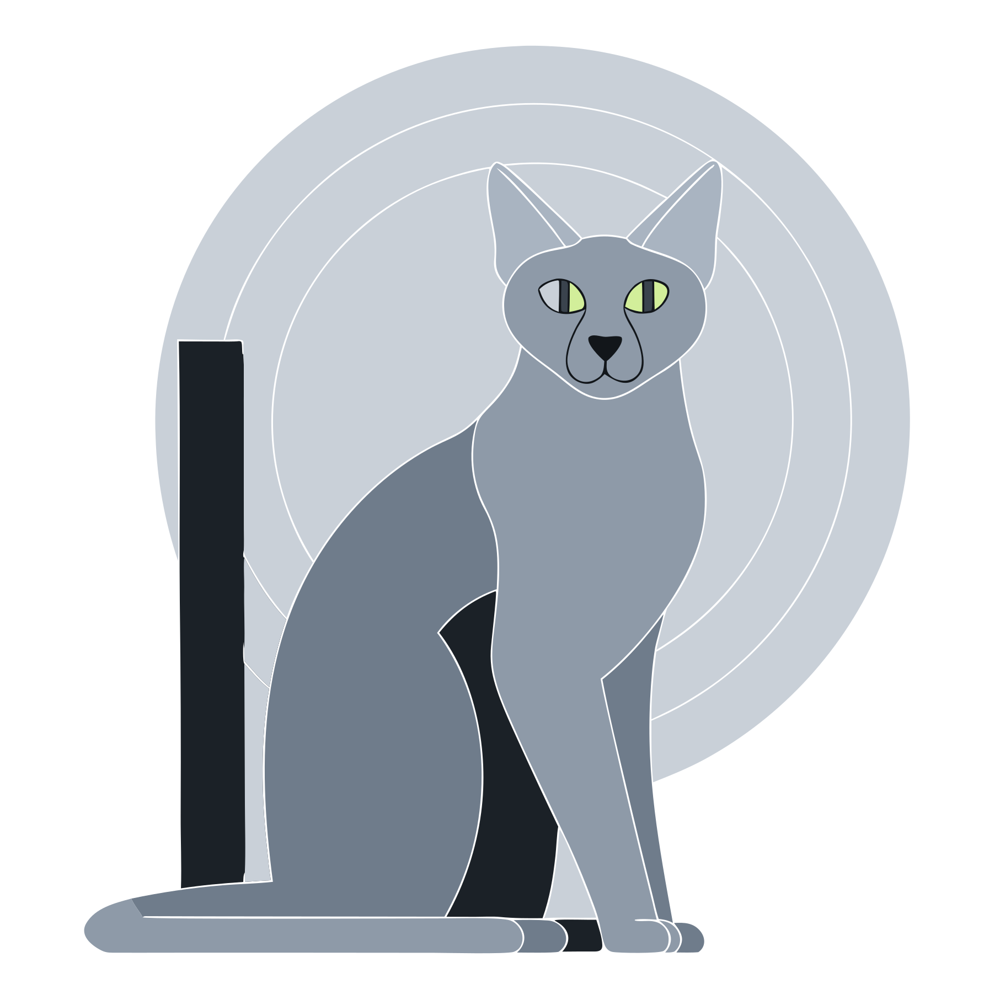

Access
Five keys. Then a voice.
Speakup starts once the kernel is running, the same limit the Debian installer has. The menu beeps when it is ready. Keys 1 through 5 choose the entry, so a blind operator does not have to arrow through a silent list.

| Key | Entry | This boot |
|---|---|---|
| 1 | Full speech | Speakup with espeak-ng, Speech Dispatcher, and BRLTTY. A graphical screen reader is not in the image. |
| 2 | Console speech | The same console stack. The graphical reader stays off. This is the entry for a blind install at the glass. |
| 3 | Large print | A 32-cell console font. The screen does not blank. Speech and braille stay off. |
| 4 | Regular | None of the access programs. This is the quiet cloud default, and the unit list still fits on one screen. |
| 5 | Advanced | Same quiet services as regular, with boot status on the console, for a sighted operator who wants to watch it come up. |
Key 1 or key 2 is the blind-ready boot. The menu itself only beeps; a Russian Blue does not meow much either. The installer then says each step as one sentence on the console and on the first serial port.
Today the menu is a one-screen GRUB that loads its own kernel, because the image is not signed. Designed, not built: one signed boot file per slot behind the same five keys, three beeps when speech was asked for and did not start, and remembering the last pick.